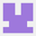

Acerca de pilas-engine
¿Que es pilas-engine?
Pilas es una herramienta para construir videojuegos de manera sencilla y divertida.
Ideamos esta herramienta para que los jóvenes puedan descubrir y aprender a programar computadoras. Creemos que aprender a programar es espectacular, porque les permite tener el control de las computadora, inventar y desarrollar cualquier tipo de software.
El equipo
En el desarrollo de pilas participamos varias personas, somos una comunidad abierta y colaborativa de programadores, docentes y estudiantes de distintas partes del mundo:
Equipo principal:
|
Hugo Ruscitti |
Walter Velazquez |
Quique Porta |
Fernando Salamero |
Irving Rodríguez |
Colaboradores:
|
Marcos Vanetta |

Luciano Baraglia |
hernantz |
Pablo Mouzo |
Diego Accorinti |
|
JuanBC |

binary-sequence |
José Luis Di Biase |

Felipe González |
Ivan Pedrazas |
|
Jairo Trad |
Matías Iturburu |
Diego Riquelme |
¿Cómo participar?
Si queres participar en el equipo, visitá nuestro foro y nuestro proyecto en github para obtener más información.
¿Por qué pilas?
Pilas está focalizado en ofrecer ayuda a los desarrolladores de juegos casuales y novatos que quieran hacer sus primeros videojuegos, ofreciendo una colección importante de actores, escenas prediseñadas y rutinas para facilitar las tareas más comunes del desarrollo.
Pensamos que pilas es una gran oportunidad de acercar el desarrollo de videojuegos a todas las personas, principalmente jóvenes con interés en aprender a programar computadoras y darle vida a sus ideas.
Pilas está profundamente inspirada en las ideas de Seymour Papert, logo y bibliotecas de videjuegos modernas como cocos2d, pygame, rabbyt y squeak.
Características
Estas son algunas de las características técnicas que podemos resumir de pilas.
- Es multiplataforma (Funciona sobre GNU/Linux y Windows)
- Cuenta con objetos prediseñados para agilizar el desarrollo.
- Tiene documentación completamente en español.
- Se utiliza desde python, lo que permite usarla desde sesiones interactivas.
- Incluye interacción con el motor de física pybox2d.
- Es software libre.
- Cuenta con varios ejemplos y tutoriales para ir paso a paso.
A lo largo del documento se dará un repaso mas completo de cada una de estas características y mas.
¿Cuando comenzó?
El proyecto comenzó el 1 de Agosto del 2010, a cargo de Hugo Ruscitti, puedes ver el primer commit del proyecto y cómo avanzó en el tiempo usando el historial de cambios que tenemos en github.
Sitio web
Para mas información sobre el motor puedes visitar el sitio web: